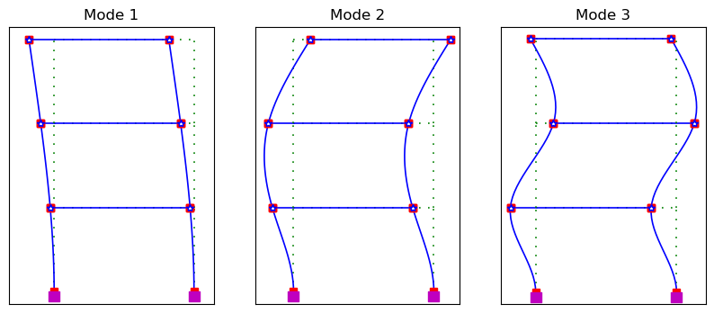

By Hossein Karagah
© Copyright 2025 GNU GENERAL PUBLIC LICENSE.
OpenSees: Three-Story MRF Analysis#
Import Dependencies#
from __future__ import annotations
from dataclasses import dataclass
import os
import sys
sys.path.append(os.path.abspath("../.."))
from assets.modules.shapes import AISC_WSection
from assets.modules.materials import SteelSectionCategories, ASTMSteel
import openseespywin.opensees as ops
from math import prod, pi, sqrt
import pandas as pd
import matplotlib.pyplot as plt
---------------------------------------------------------------------------
RuntimeError Traceback (most recent call last)
Cell In[1], line 8
6 from assets.modules.shapes import AISC_WSection
7 from assets.modules.materials import SteelSectionCategories, ASTMSteel
----> 8 import openseespywin.opensees as ops
9 from math import prod, pi, sqrt
10 import pandas as pd
File c:\Hossein\portfolio\.venv\Lib\site-packages\openseespywin\__init__.py:25
23 raise RuntimeError('Failed to import openseespy on Windows.')
24 else:
---> 25 raise RuntimeError(
26 'Python version 3.8 is needed for Windows')
28 else:
30 raise RuntimeError('This package is for Windows only')
RuntimeError: Python version 3.8 is needed for Windows
Define Materials and Sections#
# Define steel material
E = 29000 # ksi
Fy = 50.0 # ksi
cat = SteelSectionCategories.HOT_ROLLED
A992 = ASTMSteel('A992', cat, Fy, E)
# Define beam and column sections
bm = AISC_WSection('W10X26')
col = AISC_WSection('W8X48')
Define Plastic Hinge Material#
# Compute Bilin material parameters
# Regression coefficients from Lignos & Krawinkler (2011)
A = {
'd<21': {
# h/tw bf/2tf Lb/ry L/d c1*d c2*Fy
'theta_p': [0.0865, -0.365, -0.140, 0.000, 0.340, -0.721, -0.230],
'theta_pc': [5.6300, -0.565, -0.800, 0.000, 0.000, -0.280, -0.430],
'lambda': [495.00, -1.340, -0.595, 0.000, 0.000, 0.000, -0.360]
},
'd>=21': {
'theta_p': [0.3180, -0.550, -0.345, -0.023, 0.090, -0.330, -0.130],
'theta_pc': [7.5000, -0.610, -0.710, -0.110, 0.000, -0.161, -0.320],
'lambda': [536.00, -1.260, -0.525, -0.130, 0.000, 0.000, -0.291]
},
'rbs': {
'theta_p': [0.1900, -0.314, -0.100, -0.185, 0.113, -0.760, -0.070],
'theta_pc': [9.5200, -0.513, -0.863, -0.108, 0.000, 0.000, -0.360],
'lambda': [585.00, -1.140, -0.632, -0.205, 0.000, 0.000, -0.391]
}
}
def _LK(sec: AISC_WSection, is_rbs: bool,mat: ASTMSteel, L: float, Lb: float | None = None) -> dict:
"""
Lignos–Krawinkler median regressions RBS or WUF-B connections:
Returns theta_p, theta_pc, Lambda, theta_u.
"""
Fy = mat.fy
d = sec.d
ry = sec.ry
htw = sec.htw
bf2tf = sec.bf2tf
if not Lb:
Lb = 2500 / mat.fy
Lbry = Lb / ry
Ld = L / d
c1 = c2 = 1.0 # inch/ksi units
if is_rbs:
A_ = A['rbs']
else:
A_ = A['d<21'] if d < 21.0 else A['d>=21']
KL_params ={}
for key in A_.keys(): # keys: 'theta_p', 'theta_pc', 'lambda'
a = A_[key]
KL_params[key] = prod([
a[0],
htw**(a[1]),
bf2tf**(a[2]),
Lbry**(a[3]),
Ld**(a[4]),
(c1*d/533)**(a[5]),
(c2*Fy/355)**(a[6])
])
# Ultimate rotation capacity (theta_u)
# See Lignos & Krawinkler, 2011, Ultimate Rotation Capacity Section
KL_params['theta_u'] = 0.06 if is_rbs else 0.05 # radians
return KL_params
def _K0_from_hinge(sec: AISC_WSection, mat: ASTMSteel, My: float, Lp: float | None):
"""
K0 = My / theta_y, with theta_y ≈ (My/(E*Ig)) * Lp. Default Lp = 0.8*d.
"""
E, Ig = mat.E, sec.Ix
Lp = 0.8*sec.d if Lp is None else Lp
phi_y = My/(E*Ig) # 1/in
theta_y = phi_y*Lp # rad
return My/theta_y # kip-in/rad
def compute_bilin_params_wufb(
sec: AISC_WSection,
is_rbs: bool,
mat: ASTMSteel,
L: float, # in, shear span (hinge to inflection)
Lb: float | None = None, # in, unbraced length (default 2500/Fy)
Lp: float | None = None, # in, hinge length (default 0.8d)
as_pos: float = 0.02, # post-yield hardening ratio (+)
as_neg: float = 0.02, # post-yield hardening ratio (–)
Res_pos: float = 0.20, # residual strength ratio (+)
Res_neg: float = 0.20, # residual strength ratio (–)
c_S: float = 1.0, c_C: float = 1.0, c_K: float = 1.0,
D_pos: float = 1.0, D_neg: float = 1.0,
nFactor: float = 0.0 # elastic stiffness amplifier (optional)
):
"""
Returns:
params: dict of Bilin arguments
cmd: ready-to-paste OpenSeesPy 'uniaxialMaterial("Bilin", ...)' line
"""
# Effective yield moment (take sign in command):
My = mat.Ry * mat.fy * sec.Zx # kip-in
# Lignos–Krawinkler non-RBS (WUF-B) medians
KL_params = _LK(sec, is_rbs, mat, L)
# Elastic stiffness
K0 = _K0_from_hinge(sec, mat, My, Lp)
# Bilin expects Lamda_A although accel-reload deterioration is not active for Bilinear;
# pass a huge number to effectively disable it.
Lamda_S = Lamda_C = Lamda_K = KL_params['lambda']
Lamda_A = 1.0e16
params = dict(
K0=K0,
as_Plus=as_pos, as_Neg=as_neg,
My_Plus=+My, My_Neg=-My,
Lamda_S=Lamda_S, Lamda_C=Lamda_C, Lamda_A=Lamda_A, Lamda_K=Lamda_K,
c_S=c_S, c_C=c_C, c_A=1.0, c_K=c_K,
theta_p_Plus=KL_params['theta_p'], theta_p_Neg=KL_params['theta_p'],
theta_pc_Plus=KL_params['theta_pc'], theta_pc_Neg=KL_params['theta_pc'],
Res_Pos=Res_pos, Res_Neg=Res_neg,
theta_u_Plus=KL_params['theta_u'], theta_u_Neg=KL_params['theta_u'],
D_Plus=D_pos, D_Neg=D_neg,
nFactor=nFactor
)
cmd = (
"ops.uniaxialMaterial('Bilin', matTag, "
f"{params['K0']:.6g}, {params['as_Plus']:.6g}, {params['as_Neg']:.6g}, "
f"{params['My_Plus']:.6g}, {params['My_Neg']:.6g}, "
f"{params['Lamda_S']:.6g}, {params['Lamda_C']:.6g}, {params['Lamda_A']:.6g}, {params['Lamda_K']:.6g}, "
f"{params['c_S']:.6g}, {params['c_C']:.6g}, {params['c_A']:.6g}, {params['c_K']:.6g}, "
f"{params['theta_p_Plus']:.6g}, {params['theta_p_Neg']:.6g}, {params['theta_pc_Plus']:.6g}, {params['theta_pc_Neg']:.6g}, "
f"{params['Res_Pos']:.6g}, {params['Res_Neg']:.6g}, "
f"{params['theta_u_Plus']:.6g}, {params['theta_u_Neg']:.6g}, "
f"{params['D_Plus']:.6g}, {params['D_Neg']:.6g}"
f"{'' if params['nFactor']==0 else ', ' + str(params['nFactor'])}" # optional
")"
)
return params, cmd
params, cmd = compute_bilin_params_wufb(
sec=bm,
is_rbs=False,
mat=A992,
L=0.8*20*12
)
Define Model#
###############
# Reset Model #
###############
ops.wipe()
################
# Create Model #
################
# 2 dimensions, 3 DOF per node
ops.model('basic', '-ndm', 2, '-ndf', 3)
#### Units are inches, kips, seconds ####
# Define variables
story_height = 12 * 12 # inches
span = 20 * 12 # inches
nStoreis = 3
nBays = 1
nodeTags = {}
################
# Define Nodes #
################
for story in range(nStoreis + 1):
for bay in range(nBays + 1):
nodeTag = 10 * story + bay + 1
x = bay * span
y = story * story_height
ops.node(nodeTag, x, y)
nodeTags[(story, bay)] = nodeTag
# Define extra node in the same coordinate for beam plastic hinges
if story != 0:
nodeTagPH = (10 * story + bay + 1) * 10
ops.node(nodeTagPH, x, y)
nodeTags[(story, bay, 'PH')] = nodeTagPH
ops.equalDOF(nodeTagPH, nodeTag, 1, 2) # Tie translational DOFs (UX an UY)
# Fix base nodes
if story == 0:
ops.fix(nodeTag, 1, 1, 1)
####################
# Define Materials #
####################
b = 0.01 # initial hardening ratio
matTags = [1, 2, 3]
# Nonlinear steel material
ops.uniaxialMaterial('Steel01', matTags[0], A992.fy, A992.E, b)
# elastic steel material
ops.uniaxialMaterial('Elastic', matTags[1], E)
# Define bilin material for plastic hinges
ops.uniaxialMaterial('IMKBilin', matTags[2],
params['K0'], params['as_Plus'], params['as_Neg'],
params['My_Plus'], params['My_Neg'],
params['Lamda_S'], params['Lamda_C'], params['Lamda_A'], params['Lamda_K'],
params['c_S'], params['c_C'], params['c_A'], params['c_K'],
params['theta_p_Plus'], params['theta_p_Neg'],
params['theta_pc_Plus'], params['theta_pc_Neg'],
params['Res_Pos'], params['Res_Neg'],
params['theta_u_Plus'], params['theta_u_Neg'],
params['D_Plus'], params['D_Neg']
)
coordTransf = "PDelta" # Linear, PDelta, Corotational
transfTag = 1
ops.geomTransf(coordTransf, transfTag)
###################
# Define Sections #
###################
colSecTag = 1
Nfw = 8 # number of fibers in web
Nff = 8 # number of fibers in flange
ops.section('WFSection2d', colSecTag, matTags[0], col.d, col.tw, col.bf, col.tf, Nfw, Nff)
bmSecTag = 2
ops.section('Elastic', bmSecTag, A992.E, bm.A, bm.Ix)
###################
# Define Elements #
###################
nIntPoints = 4 # max = 10
eleTags = {'col': {}, 'bm': {}, 'ph': {}}
for story in range(nStoreis):
for bay in range(nBays + 1):
# Define one column element per story/bay (nonlinear beam-column element)
colEleTag = 100 * (story + 1) + (bay + 1)
nodeTag = (nodeTags[(story, bay)], nodeTags[(story + 1, bay)])
ops.element('nonlinearBeamColumn', colEleTag, *nodeTag, nIntPoints, colSecTag, transfTag)
eleTags['col'][colEleTag] = nodeTag
for bay in range(nBays):
# Define one beam element per story/bay (elastic beam-column element)
bmEleTag = 100 * (story + 1) + 10 + (bay + 1)
nodeTag = (nodeTags[(story + 1, 0, 'PH')], nodeTags[(story + 1, 1, 'PH')])
ops.element('elasticBeamColumn', bmEleTag, *nodeTag, bmSecTag, transfTag)
eleTags['bm'][bmEleTag] = nodeTag
# Define beam left plastic hinges (zeoro-length element with Bilin material)
phEleTag = 10 * bmEleTag
nodeTag = (nodeTags[(story + 1, 0)], nodeTags[(story + 1, 0, 'PH')])
ops.element('zeroLength', phEleTag, *nodeTag, '-mat', matTags[2], '-dir', 6)
eleTags['ph'][phEleTag] = nodeTag
# Define beam right plastic hinges (zeoro-length element with Bilin material)
nodeTag = (nodeTags[(story + 1, 1)], nodeTags[(story + 1, 1, 'PH')])
ops.element('zeroLength', phEleTag + 1, *nodeTag, '-mat', matTags[2], '-dir', 6)
eleTags['ph'][phEleTag + 1] = nodeTag
########################
# Define Gravity Loads #
########################
tsTag = 1
ops.timeSeries('Linear', tsTag, '-factor', 1.0)
DL = 0.5 # k/in, distributed load
CL = 15 # kips, concentrated load
patternTag = 1
# Define loads in gravity direction (-UY)
ops.pattern('Plain', patternTag, tsTag)
ops.load(11, 0.0, -CL/2, 0.0),
ops.load(12, 0.0, -CL/2, 0.0),
ops.load(21, 0.0, -CL/2, 0.0),
ops.load(22, 0.0, -CL/2, 0.0),
ops.load(31, 0.0, -CL/2, 0.0),
ops.load(32, 0.0, -CL/2, 0.0),
ops.eleLoad('-ele', *[111, 211, 311], '-type', '-beamUniform', -DL)
#################
# Define Masses #
#################
# Define masses in the lateral direction only (UX)
# 75 tonf x 2.205 kip/tonf = 165.375 kip
# g = 32.2 ft/s²
# 165.375 kip / g = 5.14 tonf·s²/ft (5140 lb·s²/in or slugs)
ops.mass(11, 2.6, 0.0, 0.0) # half goes to each floor node
ops.mass(12, 2.6, 0.0, 0.0)
ops.mass(21, 2.6, 0.0, 0.0)
ops.mass(22, 2.6, 0.0, 0.0)
ops.mass(31, 2.6, 0.0, 0.0)
ops.mass(32, 2.6, 0.0, 0.0)
IMK with Bilinear Response - Code by AE_KI (Nov22)
Gravity Analysis#
##################
# Start Analysis #
##################
ops.initialize()
##################
# Set Recorders #
##################
reactNodeTags = [1, 2]
ops.recorder('Node', '-file', 'node_reactions.out', '-time', '-node', *reactNodeTags, '-dof', 1, 2, 3, 'reaction')
# distNodeTags = [11, 21, 31]
# ops.recorder('Node', '-file', 'node_disp.out', '-time', '-node', 12, 22, 32, '-dof', 1, 2, 3,'disp')
####################
# Analysis Options #
####################
nSteps = 10 # number of analysis steps
# Constraints handler
ops.constraints('Plain')
# DOF numberer
ops.numberer('RCM')
# System of equations
ops.system('ProfileSPD')
# Convergence test
ops.test('NormDispIncr', 1.0e-6, 100, 0, 2)
# Solution algorithm
ops.algorithm('Newton')
# Integrator
ops.integrator('LoadControl', 1/nSteps)
# Analysis type
ops.analysis('Static')
# Record initial state of model
ops.record()
# Analyze the model for gravity loads
ops.analyze(nSteps)
# Reset for next analysis case
ops.setTime(0.0)
ops.loadConst()
ops.remove('recorders')
ops.wipeAnalysis()
Base Reactions#
df_r = pd.read_csv("node_reactions.out", sep=r"\s+", header=None)
df_r.columns = ['Time', 'N1-RX', 'N1-RY', 'N1-MZ', 'N2-RX', 'N2-RY', 'N2-MZ']
df_r.set_index('Time', inplace=True)
print(df_r)
N1-RX N1-RY N1-MZ N2-RX N2-RY N2-MZ
Time
0.0 0.000000 0.0000 0.00000 0.000000 0.0000 0.00000
0.1 0.002399 20.2625 1.38490 -0.002399 20.2375 1.61568
0.2 0.002399 40.5125 1.38509 -0.002399 40.4875 1.61586
0.3 0.002399 60.7625 1.38533 -0.002399 60.7375 1.61610
0.4 0.002399 81.0125 1.38557 -0.002399 80.9875 1.61634
0.5 0.002399 101.2630 1.38581 -0.002399 101.2370 1.61658
0.6 0.002399 121.5130 1.38605 -0.002399 121.4870 1.61682
0.7 0.002399 141.7630 1.38629 -0.002399 141.7370 1.61706
0.8 0.002399 162.0130 1.38653 -0.002399 161.9870 1.61730
0.9 0.002399 182.2630 1.38677 -0.002399 182.2370 1.61754
1.0 0.002399 202.5130 1.38701 -0.002399 202.4870 1.61778
The reactions are symmetric with horizontal reactions equal to zero as expected for gravity analysis. The total vertical reactions should be equal to the total applied ravity loads.
total_gravity = DL * span * nBays * nStoreis + CL * nStoreis
print(f"Total gravity load: {total_gravity} kips")
computed_grsvity = df_r['N1-RY'].iloc[-1] + df_r['N2-RY'].iloc[-1]
print(f"Computed gravity load from reactions: {computed_grsvity} kips")
Total gravity load: 405.0 kips
Computed gravity load from reactions: 405.0 kips
Visualize Results#
import opsvis as opsv
opsv.plot_model()
<Axes: >
opsv.plot_defo()
10090.869163818572
opsv.section_force_diagram_2d(sf_type='N', sfac=0.1)
(-0.0055940837254637, -0.0055940837254637, <Axes: >)
Modal Analysis#
##################
# Start Analysis #
##################
ops.initialize()
##################
# Set Recorders #
##################
nEigens = 3 # number of eigenvalues to compute
modalNodeTags = [11, 21, 31]
# ops.recorder('Node', '-file', 'modal_node_eigen1.out', '-time', '-node', *modalNodeTags, '-dof', 1, 'eigen 1')
# ops.recorder('Node', '-file', 'modal_node_eigen.out', '-time', '-node', *modalNodeTags, '-dof', 1, 'eigen', *[1, 2, 3])
for mode in range(1, nEigens + 1):
ops.recorder('Node', '-file', f'modal_eigen{mode}.out', '-time', '-node', *modalNodeTags, '-dof', 1, f'eigen {mode}')
####################
# Analysis Options #
####################
# Constraints handler
ops.constraints('Transformation')
# DOF numberer
ops.numberer('Plain')
# System of equations
ops.system('BandGen')
# Convergence test
ops.test('NormDispIncr', 1.0e-12, 25, 0, 2)
# Solution algorithm
ops.algorithm('Newton')
# Integrator
_gamma, _beta = 0.5, 0.25 # average constant acceleration (middle point rule)
ops.integrator('Newmark', _gamma, _beta, 'form', 'D')
# Analysis type
ops.analysis('Transient')
# Analyze the model
eigenValues = ops.eigen(nEigens) # λ
with open('modal_eigenvalues.out', 'w') as eigenID:
eigenID.write(f"{'λ':>15} {'ω (rad/sec)':>15} {'T (sec)':>15} {'f (Hz)':>15}\n")
for i, eigenVal in enumerate(eigenValues):
omega = sqrt(eigenVal) # ω = √λ (rad/sec)
period = 2 * pi / omega # T = 2π/ω (sec)
freq = 1 / period if period != 0 else 0
eigenID.write(f'{eigenVal:>15} {omega:>15} {period:>15} {freq:>15}\n')
print(f'Mode {i+1}: Eigenvalue = {eigenVal:.6g}, Period = {period:.6g} sec')
# Record eigenvectors
ops.record()
# Reset for next analysis case
ops.setTime(0.0)
ops.loadConst()
ops.remove('recorders')
ops.wipeAnalysis()
# Combine records into single file and delete individual files
with open('modal_eigenvectors.out', 'w') as outfile:
for mode in range(1, nEigens + 1):
with open(f'modal_eigen{mode}.out', 'r') as infile:
for line in infile:
outfile.write(line)
os.remove(f'modal_eigen{mode}.out')
Mode 1: Eigenvalue = 58.0677, Period = 0.824541 sec
Mode 2: Eigenvalue = 2492.63, Period = 0.125849 sec
Mode 3: Eigenvalue = 17996, Period = 0.0468374 sec
Visualize Mode Shapes#
fig, axes = plt.subplots(1, nEigens, figsize=(10,4))
axes = axes.flatten()
for i, ax in enumerate(axes):
opsv.plot_mode_shape(modeNo=i+1, ax=ax)
ax.set_title(f'Mode {i+1}')
ax.xaxis.set_visible(False)
ax.yaxis.set_visible(False)
